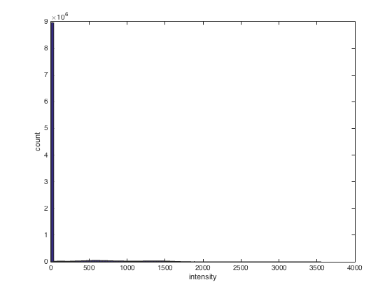
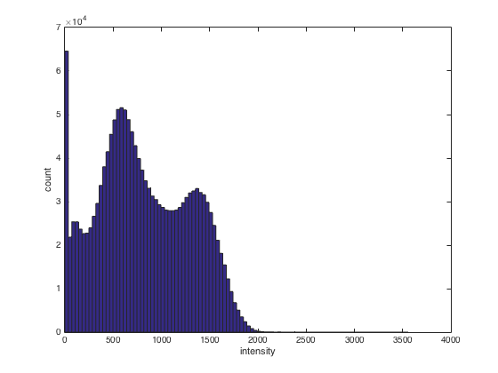
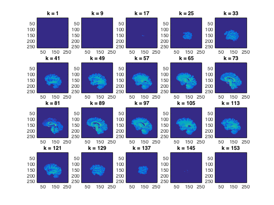
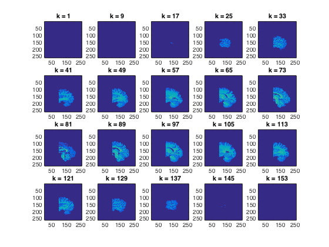
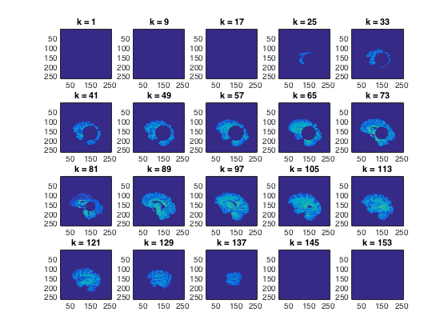

Contents
- Anatomical dataset basics
- Show the dataset contents using cosmo_disp. Where can you see the
- There are a lot of zero values in the dataset. Find all non-zero values
- Using cosmo_plot_slices, show a saggital view of the dataset
- ds.fa.i contains, for each feature (voxel), an index for the
- Advanced exercise: set all voxels around a center voxel at
Anatomical dataset basics
In this example, load a brain as a CoSMoMVPA datset and visualize it in matlab
- For CoSMoMVPA's copyright information and license terms, #
- see the COPYING file distributed with CoSMoMVPA. #
% Set the path. config=cosmo_config(); data_path=fullfile(config.tutorial_data_path,'ak6','s01'); % Set filename fn=fullfile(data_path, 'brain.nii'); % Load with cosmo_fmri_dataset and assign to a variable 'ds' % >@@> ds=cosmo_fmri_dataset(fn); % <@@<
Show the dataset contents using cosmo_disp. Where can you see the
number of voxels in the three spatial dimensions? >@@>
cosmo_disp(ds) % the number of voxels in the spatial dimensions are present in % ds.a.vol.dim, and are also indicated by the sizes of ds.a.fdim.values % <@@< % Show a histogram of all values in the dataset. For bonus points add axis % labels. % Hint: all data is present in ds.samples % >@@> hist(ds.samples,100) xlabel('intensity'); ylabel('count'); % <@@<
.a
.vol
.mat
[ 0 0 1 -84.9
-0.938 0 0 124
0 0.938 0 -65.8
0 0 0 1 ]
.xform
'scanner_anat'
.dim
[ 256 256 160 ]
.fdim
.labels
{ 'i'
'j'
'k' }
.values
{ [ 1 2 3 ... 254 255 256 ]@1x256
[ 1 2 3 ... 254 255 256 ]@1x256
[ 1 2 3 ... 158 159 160 ]@1x160 }
.sa
struct (empty)
.samples
[ 0 0 0 ... 0 0 0 ]@1x10485760
.fa
.i
[ 1 2 3 ... 254 255 256 ]@1x10485760
.j
[ 1 1 1 ... 256 256 256 ]@1x10485760
.k
[ 1 1 1 ... 160 160 160 ]@1x10485760
 There are a lot of zero values in the dataset. Find all non-zero values
in ds.samples, and plot a histogram of those. What do the two bumps represent? >@@>
nonzero_mask=ds.samples~=0; nonzero_samples=ds.samples(ds.samples~=0); hist(nonzero_samples,100); xlabel('intensity'); ylabel('count'); % <@@<
Using cosmo_plot_slices, show a saggital view of the dataset
>@@>
cosmo_plot_slices(ds); % <@@< % Make a copy of the dataset ds_copy=ds;
ds.fa.i contains, for each feature (voxel), an index for the
anterior-posterior position of that voxel. Set all voxels that have a value of less than 100 for ds.fa.i to zero, and plot the results >@@>
ds_copy.samples(ds.fa.i<100)=0; cosmo_plot_slices(ds_copy) % <@@< % Store the results in a nifti file for visualization using cosmo_map2fmri output_path=config.output_data_path; fn_out=fullfile(output_path,'anatomical_dataset_posterior.nii'); % >@@> cosmo_map2fmri(ds_copy,fn_out); % <@@<
Advanced exercise: set all voxels around a center voxel at
i=150,j=100,k=50 within a 40-voxel radius to zero, and display the result
center_ijk=[150; 100; 50]; radius=40; % >@@> ds_copy2=ds; all_ijk=[ds_copy2.fa.i; ... ds_copy2.fa.j; ... ds_copy2.fa.k]; % compute difference dimension-wise delta=bsxfun(@minus,center_ijk,all_ijk); % Pythogoras squared_distance_from_center=sum(delta.^2,1); % define mask mask=squared_distance_from_center<=radius^2; % set voxels to zero ds_copy2.samples(:,mask)=0; % show result cosmo_plot_slices(ds_copy2); % <@@<